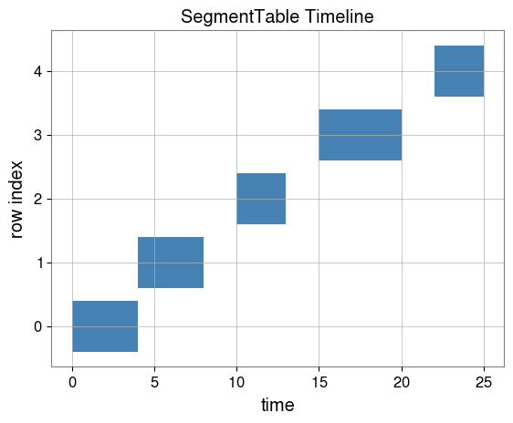

Note
This page was generated from a Jupyter Notebook. Download the notebook (.ipynb)
Introduction to SegmentTable
Goal: Learn how to use SegmentTable to manage time-keyed data analysis.
SegmentTable is a container for metadata and payload data (like TimeSeries or PSDs) associated with specific time segments. It supports lazy-loading to handle large datasets efficiently.
1. Creating a SegmentTable
We’ll start by loading sample data from a CSV file. This CSV defines segments with GPS start and end times.
[1]:
from gwexpy.table import SegmentTable
import os
# Relative path from tutorials directory to docs/_static/samples/
sample_csv = "../../../../_static/samples/sample_segment_data.csv"
st = SegmentTable.read(sample_csv)
print(st)
st.display().head()
start end label span
0 0 4 A (0.0, 4.0)
1 4 8 B (4.0, 8.0)
2 10 13 C (10.0, 13.0)
3 15 20 D (15.0, 20.0)
4 22 25 E (22.0, 25.0)
[1]:
| start | end | label | span | |
|---|---|---|---|---|
| 0 | 0 | 4 | A | (0.0, 4.0) |
| 1 | 4 | 8 | B | (4.0, 8.0) |
| 2 | 10 | 13 | C | (10.0, 13.0) |
| 3 | 15 | 20 | D | (15.0, 20.0) |
| 4 | 22 | 25 | E | (22.0, 25.0) |
2. Visualizing Segments
You can quickly visualize the timeline of your segments.
[2]:
import matplotlib.pyplot as plt
fig, ax = plt.subplots()
st.segments(ax=ax, label="Tutorial Segments")
plt.title("SegmentTable Timeline")
plt.show()

3. Lazy Loading Payloads
SegmentTable allows you to attach “loaders” to columns. Data is only loaded when actually accessed.
[3]:
from gwexpy.noise.wave import gaussian
def noise_loader(segment):
# Generate synthetic noise for the segment
duration = float(segment[1] - segment[0])
return gaussian(duration=duration, sample_rate=1024, t0=float(segment[0]))
# Note: Use add_series_column for lazy-loadable payload data (kind='timeseries', etc.)
st.add_series_column("noise", loader=noise_loader, kind="timeseries")
# Accessing the first row's noise (triggers loading)
data_0 = st.row(0)["noise"]
print(f"Loaded {len(data_0)} samples starting at GPS {data_0.t0.value}")
Loaded 4096 samples starting at GPS 0.0
4. Processing Rows
You can iterate over rows or use apply to process data.
[4]:
# Calculate RMS for each noise segment
# Use add_column for lightweight metadata results
st.add_column("rms", data=[row["noise"].rms().value for row in st])
st.display()
[4]:
| start | end | label | span | rms | noise | |
|---|---|---|---|---|---|---|
| 0 | 0 | 4 | A | (0.0, 4.0) | 0.998228 | <timeseries: 4096 samples> |
| 1 | 4 | 8 | B | (4.0, 8.0) | 1.003323 | <timeseries: 4096 samples> |
| 2 | 10 | 13 | C | (10.0, 13.0) | 1.001703 | <timeseries: 3072 samples> |
| 3 | 15 | 20 | D | (15.0, 20.0) | 1.010198 | <timeseries: 5120 samples> |
| 4 | 22 | 25 | E | (22.0, 25.0) | 0.998113 | <timeseries: 3072 samples> |
5. Quick Check (NBMAKE)
[5]:
assert "noise" in st.columns
assert len(st) > 0
print("Validation successful!")
Validation successful!